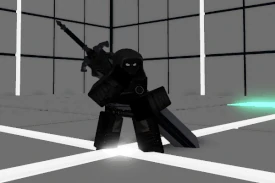

Revenant is a Duelist/Tank hybrid class aligned with the Corruption faction. Be it with his bare hands or with his mighty greatsword, Revenant excels at shrugging off the opponent's offense and retaliating with brute force. Although his range and aerial options are lacking, his abundancy of Super Armor, healing, and guardbreaking abilities make him into a dominant, demanding and persistent threat. When he's beyond you, start planning -- when he's upon you, start praying.
The living weapon of Corruption. In his mortal life, Revenant was known as "the Champion", a fierce warrior who lived a life of honor and glory. His strength was so prodigal that, when he died, his people sought to bring him back from beyond the grave to serve them once more. However, the forces of life and death are not to be trifled with. The ritual was soured by the use of Void Energy, and resulted in the Champion's soul being sealed within his own blade, Remnant. But the Champion didn't care. He lived for the fight, and gladly abandoned his human masters in favor of his newfound power. Thus, in honor of his service, the forces of Corruption now perfect a host body worthy of wielding the Champion's blade. Then, as this "Vessel" wields Remnant for the first time, the spirit of the Champion possesses the body... and the Revenant is born to fight again.
Revenant's Heavy Autocombo (H.AC) is replaced by a short animation that allows him to swap between two stances: Fist stance (default) and Sword stance.
If in the incorrect stance when using these attacks, Revenant will automatically swap stances with H.AC and automatically perform the attack afterwards.
Depending on his current stance, Revenant's Launcher (LC) and Light Autocombo (L.AC) will use either his fists or his greatsword, Remnant.
(Ground) - Revenant leans into an overhead swing with Remnant and flattens the opponent. Inflicts knockdown. Can hit enemies above him. Has Lvl. 1 Super Armor. Despite being a Guardbreak, this attack does not have an Armor Break stat. Upon hit, the animation can be cancelled with another move.
(Ground) - Revenant slings the opponent upwards with a grounded uppercut. If Revenant is in Sword stance, he will instead turn around and slice the opponent upwards by tilting Remnant.
Upon hit, Revenant can cancel this move into anything.
4 inputs (3 if Sword), can be modded with W and S in Sword stance
1 input, switches between Fist stance and Sword stance
